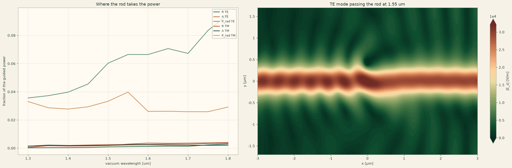
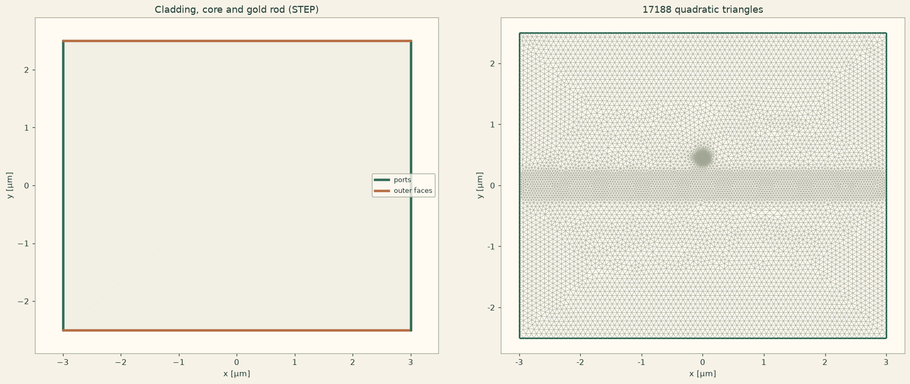

Docs › Examples › Metal scatterer near an optical waveguide
Wave optics · 2D
Metal scatterer near an optical waveguide
A gold rod of 0.2 um diameter next to a silicon nitride slab waveguide reflects, absorbs and scatters part of the guided light from 1.3 to 1.8 um, for TE and TM.
Run locally with OneSimulation. The example downloads are free. Running them requires an activated runtime. Runtime Alpha 0.2.1a7 · CPython 3.13 on macOS (Apple Silicon), Ubuntu 22.04 (x86-64), and Windows x64. Installation and activation · View pilot plans. Scope of the reference checks.

What it computes
OneSimulation solves E_z and H_z on the section read from STEP files drawn in micrometres; the mesh is scaled to metres and the model is solved in SI units. Waveguide ports compute the modes of their lines through core, cladding and absorbing layers, feed the guided mode and absorb the rest; gold follows the Drude-Lorentz model. The script that builds the STEP files comes with the notebook.
What it checks
The guided mode of the port lines matches the exact slab dispersion to 4e-6 in the effective index at all 22 wavelength-polarization pairs; reflection, transmission, absorption in the gold and the Poynting flux into the absorbing layers add up to 1 within 4.4e-3.
Geometry
The notebook starts at the import of the CAD files waveguide_metal_scatterer.step, waveguide_metal_scatterer_core.step, waveguide_metal_scatterer_rod.step: STEP (AP242), readable by any CAD program, with the names of the faces that the boundary conditions use. Put them next to the notebook.

The geometry script
The script waveguide_metal_scatterer_geometry.py builds the geometry with the CAD objects of OneSimulation and writes the files. Change a dimension there, run it, and run the notebook again.
"""Geometry of the OneSimulation example "Metal scatterer near an optical waveguide".
Builds, as thin plates with the CAD objects of OneSimulation and in micrometres, a section 6 um long
and 5 um high of silica cladding (waveguide_metal_scatterer.step; x_min and x_max are the ports,
y_min and y_max the outer faces behind the absorbing layers), the 0.4 um silicon nitride core along
its middle (waveguide_metal_scatterer_core.step) and a gold rod of 0.1 um radius 0.15 um above the
core (waveguide_metal_scatterer_rod.step).
"""
from onesim.cad.d3 import Box, Cylinder
length, height, core, radius, gap, depth = 6.0, 5.0, 0.4, 0.1, 0.15, 0.1
Box(
length=length, width=height, height=depth, origin=(-length / 2, -height / 2, 0)
).save("waveguide_metal_scatterer.step")
Box(length=length, width=core, height=depth, origin=(-length / 2, -core / 2, 0)).save(
"waveguide_metal_scatterer_core.step"
)
Cylinder(radius=radius, length=depth, origin=(0.0, core / 2 + gap + radius, 0)).save(
"waveguide_metal_scatterer_rod.step"
)The notebook
The complete notebook, cell by cell. Run it to produce the figures and the comparison printout.
A slab waveguide - a core of index \(n_1=2.0\) and thickness \(d=0.4\) um in a cladding of \(n_2=1.45\) - guides light of 1.3 to 1.8 um in its fundamental TE and TM modes. A gold rod 0.15 um above the core reaches into the evanescent tail of the mode. It takes power out of the guided mode in three ways: it reflects part of it back into the guide, it absorbs part (gold is lossy) and it scatters part into the cladding as radiation.
Gold is the Drude-Lorentz model of Rakić et al. (\(\hbar\omega_p=9.03\) eV, \(f_0=0.760\), \(\hbar\Gamma_0=0.053\) eV and five interband oscillators). The section solves \(E_z\) (TE) and \(H_z\) (TM). Absorbing layers (CartesianPML) 0.8 um thick above and below take the radiation; the waveguide ports run through them, and their mode solver handles the complex material of the layers.
| boundary | condition |
|---|---|
x_min | waveguide port, four modes, the fundamental fed with 1 W/m |
x_max | waveguide port, four modes |
y_min, y_max (behind the absorbing layers) | perfect electric conductor |
Reference (D. Marcuse, Theory of Dielectric Optical Waveguides, 2nd ed., §1.3; A. D. Rakić et al., Appl. Opt. 37, 5271 (1998); Poynting's theorem). With \(\kappa=\sqrt{n_1^2k_0^2-\beta^2}\) and \(\gamma=\sqrt{\beta^2-n_2^2k_0^2}\) the even modes of the slab satisfy
The power balance \(R+T+A+P_{rad}=1\) uses four independent parts of the solution: the port amplitudes (\(R=|S_{11}|^2\), \(T=|S_{21}|^2\)), the absorbed power density in the gold (\(A\)) and the Poynting flux \(\tfrac12\mathrm{Re}(\mathbf E\times\mathbf H^*)\) through two lines just inside the absorbing layers (\(P_{rad}\)).
The STEP parts are drawn in micrometres, the unit that suits features of 0.1 um; scaled brings the mesh to metres, so the model is solved in SI units and the plots show micrometres again.
import numpy as np
from onesim.cad.exchange import load
from onesim.materials import VACUUM_PERMEABILITY, VACUUM_PERMITTIVITY
from onesim.materials.electromagnetic import (
CartesianPML,
DrudeLorentzElectromagneticMaterial,
IsotropicElectromagneticMaterial,
LorentzOscillator,
RegionwiseElectromagneticMaterial,
electronvolts_to_angular_frequency,
)
from onesim.meshing import TriangularMesher, scaled
from onesim.numerics import Numerics
from onesim.numerics.fem import FiniteElement, Lagrange
from onesim.numerics.linear import ComplexSparseDirect
from onesim.physics.electromagnetics import (
FrequencyDomainMaxwell,
PerfectElectricConductor,
SectionWaveguidePort,
port_modes,
scattering_parameters,
)
from onesim.simulation import Problem, Simulation
from onesim.visualization import plots, theme
from scipy.optimize import brentq
theme.set()
core, cladding, thickness = 2.0, 1.45, 0.4e-6
light = 1 / np.sqrt(VACUUM_PERMEABILITY * VACUUM_PERMITTIVITY)
plasma, oscillators = 9.03, [
(0.024, 0.241, 0.415),
(0.010, 0.345, 0.830),
(0.071, 0.870, 2.969),
(0.601, 2.494, 4.304),
(4.384, 2.214, 13.32),
]
gold = DrudeLorentzElectromagneticMaterial(
plasma_frequency=electronvolts_to_angular_frequency(np.sqrt(0.760) * plasma),
collision_rate=electronvolts_to_angular_frequency(0.053),
oscillators=tuple(
LorentzOscillator(
strength=f * plasma**2 / w**2,
resonance_frequency=electronvolts_to_angular_frequency(w),
damping=electronvolts_to_angular_frequency(g),
)
for f, g, w in oscillators
),
)Geometry and mesh
load reads the cladding, the core and the rod; section cuts them at half thickness. Quadratic triangles of 80 nm in the cladding, 40 nm in the core and 6 nm in the rod, where the field decays within 25 nm of the surface; scaled(..., "um") turns the micrometres of the drawing into metres.
parts = {
name: load(f"waveguide_metal_scatterer{name}.step").section(
(0, 0, 1), origin=(0, 0, 0.05)
)
for name in ("", "_core", "_rod")
}
section = parts[""]
sides = section.boundaries
mesh = scaled(
TriangularMesher(
target_size=0.08,
embedded_regions=(parts["_core"].named("core"), parts["_rod"].named("rod")),
region_sizes={"core": 0.04, "rod": 0.006},
).generate(section),
"um",
)
fig = plots.figure(1, 2, size=(16, 6.5))
plots.geometry(
section,
selection={
"ports": sides.x_min | sides.x_max,
"outer faces": sides.y_min | sides.y_max,
},
labels=False,
title="Cladding, core and gold rod (STEP)",
length_unit="um",
drawing_unit="um",
ax=fig[0],
)
plots.mesh(
mesh,
groups=("all",),
legend=False,
title=f"{mesh.cell_count} quadratic triangles",
length_unit="um",
ax=fig[1],
)
plots.show()Model
The damping of the absorbing layers grows quadratically over the outer 0.8 um above and below. Each port keeps four modes - the guided mode and the next three modes of the port line, ordered by their propagation constant; modes that live in the absorbing layers come last - so that the near field of the rod that reaches the ports also leaves the model.
omega = lambda wavelength: 2 * np.pi * light / wavelength
material = lambda wavelength: CartesianPML(
material=RegionwiseElectromagneticMaterial(
{
"core": IsotropicElectromagneticMaterial(relative_permittivity=core**2),
"rod": gold,
},
default=IsotropicElectromagneticMaterial(relative_permittivity=cladding**2),
),
damping=lambda x, y, z: np.column_stack(
(
0 * x,
3
* omega(wavelength)
* np.clip((np.abs(y) - 1.7e-6) / 0.8e-6, 0, None) ** 2,
0 * x,
)
),
)
numerics = Numerics(
spatial=FiniteElement(element=Lagrange(order=2)),
linear_solver=ComplexSparseDirect(),
)
model = lambda wavelength, polarization: FrequencyDomainMaxwell(
domain=section.domain(),
frequency=light / wavelength,
material=material(wavelength),
polarization=polarization,
phasor_convention="exp(-i*omega*t)",
amplitude_convention="peak",
)
solve = lambda physics: Simulation(
problem=Problem(
name="scatterer",
geometry=section,
physics=(physics,),
boundary_conditions=(
SectionWaveguidePort(
physics=physics, boundary=sides.x_min, modes=4, incident_power=1.0
),
SectionWaveguidePort(physics=physics, boundary=sides.x_max, modes=4),
PerfectElectricConductor(
physics=physics, boundary=sides.y_min | sides.y_max
),
),
),
mesh=mesh,
numerics=numerics,
).solve_stationary()
wavelengths = np.linspace(1.3e-6, 1.8e-6, 11)
cases = {
(wavelength, polarization): model(wavelength, polarization)
for wavelength in wavelengths
for polarization in ("Ez", "Hz")
}
results = {key: solve(physics) for key, physics in cases.items()}Results
The guided mode of the port line against the exact slab modes, then the power balance. The Poynting flux leaves through the lines \(y=\pm1.6\) um; \(\mathbf H=\mathbf B/\mu_0\).
line = np.linspace(-2.9e-6, 2.9e-6, 1161)
flux = {}
for key, result in results.items():
leaving = 0.0
for height, sign in ((1.6e-6, 1.0), (-1.6e-6, -1.0)):
points = np.column_stack((line, height + 0 * line))
E = result.field(cases[key].electric_field).evaluate(points)
H = (
result.field(cases[key].magnetic_flux_density).evaluate(points)
/ VACUUM_PERMEABILITY
)
leaving += sign * np.trapezoid(
0.5 * (E[:, 2] * np.conj(H[:, 0]) - E[:, 0] * np.conj(H[:, 2])).real, line
)
flux[key] = leaving
scattering = {
key: scattering_parameters(result, cases[key]) for key, result in results.items()
}
absorbed = {
key: result.field(cases[key].absorbed_power_density).integrate().value
for key, result in results.items()
}
dispersion = lambda n, k0, te: (
np.sqrt(core**2 - n**2)
* k0
* np.tan(np.sqrt(core**2 - n**2) * k0 * thickness / 2)
/ (1 if te else core**2)
- np.sqrt(n**2 - cladding**2) * k0 / (1 if te else cladding**2)
)
print(
"lambda pol n_eff computed n_eff exact R T A P_rad R+T+A+P_rad"
)
for (wavelength, polarization), result in results.items():
k0 = 2 * np.pi / wavelength
neff = port_modes(result, cases[(wavelength, polarization)])[0]["effective_index"][
0
]
exact = brentq(
dispersion, cladding + 1e-9, core - 1e-9, args=(k0, polarization == "Ez")
)
s = scattering[(wavelength, polarization)]
R, T = abs(s[(0, 0)]) ** 2, abs(s[(1, 0)]) ** 2
print(
f"{wavelength * 1e6:5.2f} {'TE' if polarization == 'Ez' else 'TM'} {neff.real:.6f} {exact:.6f} {R:.4f} {T:.4f} {absorbed[(wavelength, polarization)]:.4f} "
f"{flux[(wavelength, polarization)]:.4f} {R + T + absorbed[(wavelength, polarization)] + flux[(wavelength, polarization)]:.4f}"
)Figure
Reflection, absorption and radiation against the wavelength for both polarizations, and the field around the rod at 1.55 um.
x, y = np.asarray(mesh.coordinates).T
at = wavelengths[int(np.argmin(np.abs(wavelengths - 1.55e-6)))]
values = np.abs(
results[(at, "Ez")]
.field(cases[(at, "Ez")].electric_field)
.evaluate(np.column_stack((x, y)))[:, 2]
)
fig = plots.figure(1, 2, size=(20, 6.5))
plots.line(
wavelengths * 1e6,
{
f"{name} {'TE' if p == 'Ez' else 'TM'}": data
for p in ("Ez", "Hz")
for name, data in (
("R", [abs(scattering[(w, p)][(0, 0)]) ** 2 for w in wavelengths]),
("A", [absorbed[(w, p)] for w in wavelengths]),
("P_rad", [flux[(w, p)] for w in wavelengths]),
)
},
xlabel="vacuum wavelength [um]",
ylabel="fraction of the guided power",
title="Where the rod takes the power",
legend="upper right",
ax=fig[0],
)
plots.heatmap(
x,
y,
values,
triangles=np.asarray(mesh.cells),
limits=(0, np.percentile(values, 99.5)),
label="|E_z| [V/m]",
ylimits=(-1.7e-6, 1.7e-6),
aspect="auto",
title=f"TE mode passing the rod at {at * 1e6:.2f} um",
length_unit="um",
ax=fig[1],
)
plots.show()Going further
Move the rod closer to the core in waveguide_metal_scatterer_geometry.py: the coupling to the evanescent tail grows exponentially. A rod of silica instead of gold only scatters, a row of rods along the guide forms a grating coupler that sends the light out at a chosen angle.